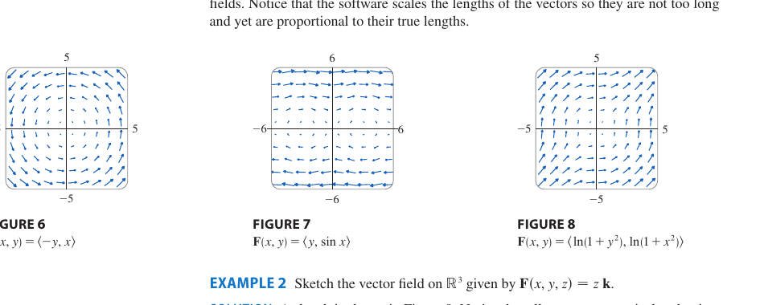

Chapter 16 · Vector Calculus
Vector fields and the calculus built on them. Conservative fields, line integrals for work and fence area, the Fundamental Theorem for Line Integrals, Green's Theorem, curl and divergence. The thread is the gradient again. A field that is a gradient stores its line integral in a potential, and the rest of the chapter measures how far a field is from being one.
16.1 Vector Fields
2DA vector field on $\mathbb R^n$ is a function $\vec F : \mathbb R^n \to \mathbb R^n$. To each point $\vec x$ in the domain we attach a vector $\vec F(\vec x)$, drawn as an arrow based at $\vec x$.
In $\mathbb R^2$ it is $\vec F(x, y) = P(x, y)\hat\imath + Q(x, y)\hat\jmath$. In $\mathbb R^3$ it is $\vec F = P\hat\imath + Q\hat\jmath + R\hat k$.
Conservative field. $\vec F = \nabla f$ for some scalar function $f$, called the potential. On a simply connected domain, $\vec F$ is conservative exactly when $\nabla \times \vec F = \vec 0$.
Examples. The radial $\vec F = \langle x, y, z\rangle$ is a source with $\nabla \cdot \vec F > 0$. The swirl $\vec F = \langle -y, x, 0\rangle$ has nonzero curl. The gradient field $\vec F = \nabla(xy) = \langle y, x, 0\rangle$ is conservative. The shear $\vec F = \langle y, 0, 0\rangle$ is not conservative.
Why a potential can fail to exist. A potential's level curves must cross the field at right angles, with $f$ increasing in the direction of $\vec F$. For the radial field these curves are circles and $f = (x^2+y^2)/2$ works. For the swirl they are rays, every ray passes through the origin, and marching the value of $f$ once around the circle returns a larger value than it started with. A single-valued potential is impossible.

16.2 Line Integrals
1D in 3DLet $C$ be a smooth oriented curve parametrised by $\vec r(t)$ for $a \le t \le b$.
(1) Scalar line integral.
Geometrically this is the area of a fence of height $f$ standing on $C$, and physically it is the mass of a wire with linear density $f$.
(2) Vector line integral, the work.
This integrates the tangent component of $\vec F$, and it equals the work done by $\vec F$ moving an object along $C$.
(3) 2D flux. The integral $\displaystyle\int_C \vec F \cdot \vec n\,ds$ takes the normal component, measuring how much of the field crosses $C$.
Orientation. Reversing $C$ flips the sign of $\int \vec F \cdot d\vec r$ and the flux. The scalar integral $\int f\,ds$ does not change.
Two integrals share similar notation. The scalar $\int_C f\,ds$ uses $|\vec r\,'(t)|\,dt$ and does not change when you reverse $C$. The work $\int_C\vec F\cdot d\vec r$ uses $\vec r\,'(t)\,dt$ and flips sign when $C$ is reversed. Match the integrand to the right form.
Wire mass and centre of mass. For a wire $C$ with linear density $\rho(x, y, z)$,
Same lever-arm logic as the 2D case. Chop the wire into small pieces, where the $i$-th has length $\Delta s_i$ and mass $\rho_i \Delta s_i$ at position $(x_i, y_i, z_i)$. The discrete centre of mass along $x$ is $\bar x = \sum \rho_i x_i \Delta s_i / \sum \rho_i \Delta s_i$, which in the limit becomes $\int_C x \rho\,ds / \int_C \rho\,ds$. The $x$ inside is the lever arm to the $yz$-plane.
16.3 The Fundamental Theorem for Line Integrals
1D in 3DThe Fundamental Theorem for Line Integrals. If $\vec F = \nabla f$ and $C$ goes from $\vec r(a)$ to $\vec r(b)$, then
Why. By the chain rule of 14.5, $\frac{d}{dt} f(\vec r(t)) = \nabla f \cdot \vec r\,'(t)$, which is the integrand. The line integral therefore adds up every change in $f$ along the path, and the total change of $f$ over a trip is its final value minus its initial value.
Path independence. $\int_C \vec F \cdot d\vec r$ is independent of the path iff $\vec F$ is conservative iff $\oint_C \vec F \cdot d\vec r = 0$ for every closed $C$. If work depends only on endpoints then closed loops give zero, and work measured from a fixed base point defines the potential $f$.
Exactness test in $\mathbb R^2$. On a simply-connected domain, $\vec F = \langle P, Q\rangle$ is conservative iff $\dfrac{\partial P}{\partial y} = \dfrac{\partial Q}{\partial x}$.
$P_y=Q_x$ is enough only on a simply connected domain with no holes. The field $\vec F=\dfrac{\langle -y,\,x\rangle}{x^2+y^2}$ satisfies $P_y=Q_x$ everywhere it is defined, yet $\oint_C\vec F\cdot d\vec r=2\pi\ne 0$ around the origin, since the punctured plane has a hole, worked out in 16.4.
Finding a potential function. Integrate $f_x = P$ with respect to $x$, then differentiate with respect to $y$ and match $f_y = Q$ to determine the unknown function of $y$.
16.4 Green's Theorem
2DGreen's Theorem. Let $C$ be a positively oriented, counterclockwise, piecewise smooth, simple closed curve bounding a region $D$. If $P, Q$ have continuous partials on an open region containing $D$, then
Why. Tile $D$ with small counterclockwise squares. Each interior edge is traversed twice in opposite directions by the two squares sharing it, so the interior contributions cancel and only the outer boundary survives. The circulation around one small square works out to $(Q_x - P_y)\,dA$, so summing circulations over the tiles gives the double integral while the surviving boundary terms give the line integral.
Mind the order. The integrand is $Q_x-P_y$, the $x$-derivative of the second component minus the $y$-derivative of the first, and $C$ must be counterclockwise. A clockwise curve flips the sign.
Area formula. $A = \tfrac12 \oint_C (x\,dy - y\,dx)$.
Green with a hole. For $D$ with outer boundary $C_{\text{out}}$ (CCW) and inner $C_{\text{in}}$ (CW),
Equivalently, traverse outer CCW and inner CW so $D$ is always on the left.
Example with a hole. Compute $\oint_C \dfrac{-y\,dx + x\,dy}{x^2 + y^2}$ for any simple CCW curve $C$ around the origin. The integrand blows up at $(0, 0)$, so cut out a small circle $C_\varepsilon$ of radius $\varepsilon$. Between $C$ and $C_\varepsilon$ we have $Q_x - P_y = 0$, so Green gives $\oint_C - \oint_{C_\varepsilon} = 0$. Parametrising $C_\varepsilon$ gives $\oint_{C_\varepsilon} = 2\pi$, hence $\oint_C = 2\pi$.
16.5 Curl and Divergence
3DCurl. For $\vec F = \langle P, Q, R\rangle$,
Curl of a gradient is zero. $\vec F = \nabla f$ (conservative) $\Rightarrow \nabla \times \vec F = \vec 0$, and the converse holds on simply-connected domains in $\mathbb R^3$. Each component of $\nabla\times\nabla f$ is a difference of mixed partials such as $f_{zy} - f_{yz}$, which vanishes by Clairaut.
Divergence.
Divergence of a curl is zero. $\nabla \cdot (\nabla \times \vec F) = 0.$ Expand it and the mixed partials cancel in pairs, Clairaut again. Swirl has no sources.
Physical pictures help. Divergence measures source and sink behaviour at a point, outward flow if positive and inward if negative. Curl measures local rotation, the paddle wheel picture.
The dome's field
Exercises on the dome $f = 1 - x^2 - y^2$, to be drawn by hand.
- Gradient field. Draw $\vec F = \nabla f = \langle -2x, -2y\rangle$ at a ring of points. Every arrow points toward the peak.
- Right angles. Overlay the level circles of $f$ and check that each arrow crosses its circle at a right angle, longest where the circles crowd together.
- The swirl. Draw $\vec G = \langle -y, x\rangle$ and verify it is not a gradient by computing $\oint \vec G\cdot d\vec r$ around the unit circle.
- Work as height. Since $f$ is a potential for $\vec F$, the work from $(1,0)$ to $(0,0)$ is $f(0,0)-f(1,0)$ along any path.
- Curl and divergence. $\vec F$ has a sink at the peak and no spin. $\vec G$ has pure spin and no net outflow. Sketch a paddle wheel in each.
Worked example
Green's Theorem on a semi-annulus. Evaluate $\oint_C (y^2\,dx + 3xy\,dy)$ where $C$ is the boundary of $\{1 \le x^2 + y^2 \le 4,\ y \ge 0\}$, oriented positively.
$P = y^2$, $Q = 3xy$, so $Q_x - P_y = 3y - 2y = y$. In polar coordinates $\iint_D y\,dA = \int_0^\pi\!\int_1^2 (r\sin\theta)\,r\,dr\,d\theta = \left(\int_0^\pi \sin\theta\,d\theta\right)\left(\int_1^2 r^2\,dr\right) = 2 \cdot \tfrac{7}{3} = \tfrac{14}{3}$.
Practice problems
- Sketch the vector field $\vec F(x, y) = \langle -y, x\rangle$.
- Determine whether $\vec F(x, y) = \langle 3 + 2 x y,\ x^2 - 3 y^2\rangle$ is conservative. if so, find a potential.
- Evaluate $\int_C y\,ds$ where $C$ is the right half of the unit circle from $(0, -1)$ to $(0, 1)$.
- Find the work done by $\vec F(x, y) = \langle x^2, -xy\rangle$ along the quarter-circle $\vec r(t) = \langle\cos t, \sin t\rangle$, $0 \le t \le \pi/2$.
- Evaluate $\int_C \vec F \cdot d\vec r$ where $\vec F = \langle z, x, y\rangle$ and $C$ is the helix $\vec r(t) = \langle\cos t, \sin t, t\rangle$, $0 \le t \le \pi$.
- Use FTLI to evaluate $\int_C \nabla f \cdot d\vec r$ where $f(x, y) = \sin x + x^2 y$ and $C$ goes from $(0, 0)$ to $(\pi, 2)$.
- Use Green's Theorem to evaluate $\oint_C (y^2\,dx + 3 x y\,dy)$ where $C$ is the boundary of the upper semi-annulus $1 \le x^2 + y^2 \le 4$, $y \ge 0$.
- Compute curl and divergence of $\vec F = \langle yz, xz, xy\rangle$.
More interactive figures
Strategies
Conservative tests. On a simply connected domain, $P_y = Q_x$ in $\mathbb R^2$, or $\nabla\times\vec F = \vec 0$ in $\mathbb R^3$, implies $\vec F$ is conservative.
Finding a potential. Integrate $f_x = P$ with respect to $x$, giving $f = \int P\,dx + g(y, z)$. Match $f_y = Q$ to determine $g_y$, then $f_z = R$ for the rest. The potential is unique up to a constant.
Reducing a line integral to one variable. Parametrise $C$ by $\vec r(t)$, $a \le t \le b$. Then $\int_C \vec F\cdot d\vec r = \int_a^b \vec F(\vec r(t))\cdot\vec r\,'(t)\,dt$, and for a scalar integral use $|\vec r\,'(t)|$ in place of the dot product.
Using FTLI. If $\vec F$ is conservative with potential $f$, evaluate $f$ at the endpoints. No parametrisation is needed.
When to use Green's Theorem. For a closed counterclockwise curve with $\vec F$ smooth on a region containing $\overline D$, convert $\oint_C P\,dx + Q\,dy$ to $\iint_D (Q_x - P_y)\,dA$ when the area integral is easier.
Green for area. Any field with $Q_x - P_y = 1$ turns the area into a boundary integral, giving $A(D) = \tfrac12 \oint_C (x\,dy - y\,dx) = \oint_C x\,dy = -\oint_C y\,dx$.
Green with a hole. Traverse the outer boundary counterclockwise and the inner boundary clockwise, so the region is always on the left.
Interpretations. $\nabla\cdot\vec F$ is net outward flux per unit volume, a source if positive and a sink if negative. $\nabla\times\vec F$ is twice the local angular velocity of an infinitesimal paddle wheel.